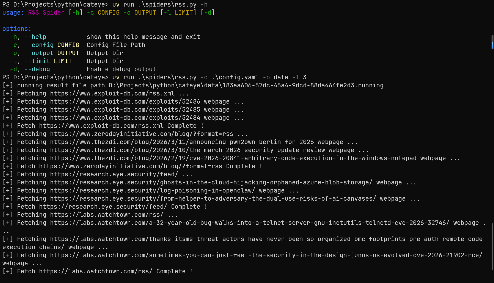
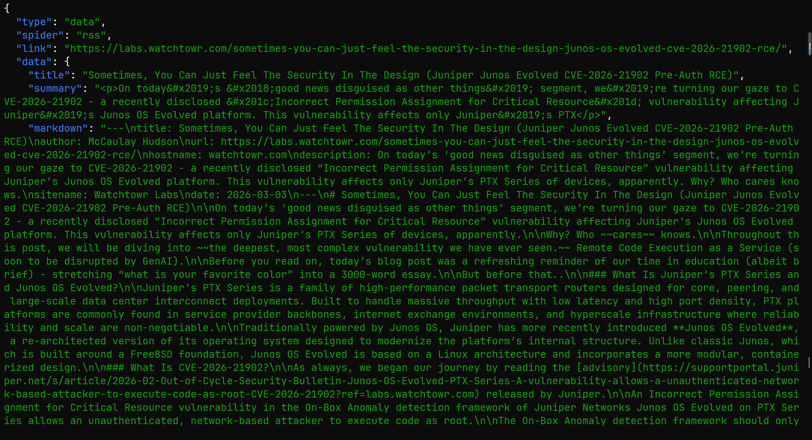
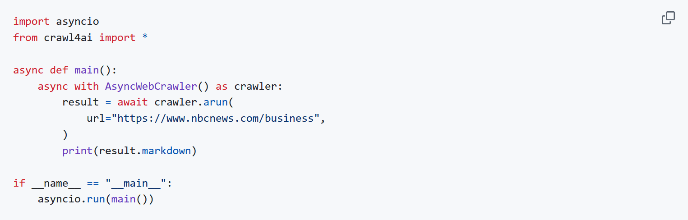
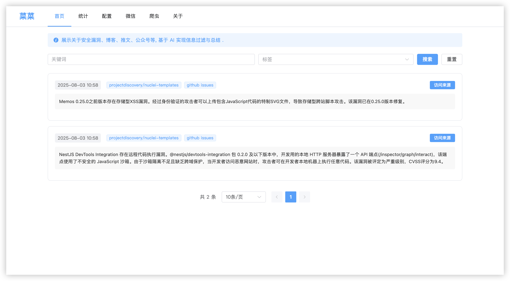

漏洞监控
- date
- 2026-03-24 15:18:03
前言
23 年大四实习的工作主要就是去跟进最新的漏洞，分析复现写 POC，所以如何找最新的 POC 是一个难题。
23 年的时候，Hacking 信息流还在，但是没多久就关站了，而当时并没有毕竟好的监控项目，最多就是 Github 检索 CVE-20XX 类似的关键词再加上比如阿里云 AVD 等类似的情报。
所以就开始写 POC 监控的相关工具，历程还是蛮有趣的，整理一下，后续大概率不会关注对应的东西了，其实每个阶段都开源了一段时间，但是后面发现没人用并且我自己又更新来就把仓库都删除了
- 2024-07
- 名字：vul-monitor
- 开发语言：Go
- 项目类型：Cli
- 简要介绍：
- 基于 robfig/cron 实现定时任务，使用 cel 表达式来对数据进行过滤，爬虫获取一个时间段新增的数据，现在获取前 30min 新增的数据，然后推送到钉钉
- 数据源
- Github：Search、Commit、Issues, PS：POC 仓库的 issues、commit 监控这个当时好像大家都没有开源的监控项目
- NVD
- ExploitDB
- PacketStorm
- 2024-08 ~ 09
- 为什么写这个版本？
- 想方便的管理 cron、github search keyword / repo …
- 想自己从 0 到 1 完成一个 Go WEB 项目
- 技术栈：Go Gin + Vite + ElementUI + MySql
- 简要介绍：
- 除了 WEB 之外就是解决获取一个时间段新增的数据，这会导致缺失，因为 Github 的缓存问题？很多的都会漏掉。所以用 URL Hash 进行重复判断。
- 获取前 4 h 之内新增的数据，然后通过 hash 来去重
- 通知依旧是钉钉
- 2025-04 左右
- 名字：threat-sail
- 为什么写这个版本？
- 突然觉得语言只是工具，根据对应的场景选择合适的语言，而不是根据自己的喜好来选择一个不方便的语言。Go 的爬虫写起来很麻烦，毕竟这个场景又不需要什么性能，好维护，简单才是目的。
- 所用的漏洞信息都发送到钉钉，找不到重要的很麻烦
- 很多的漏洞信息是英文，我不能直接发现哪些是最重要的
- CEL 表达式过滤的不全
- 环境：Linux Cron + Python + Hexo
- 简要介绍：
- python 写爬虫简单，单个脚本用 cron 定时跑就行
- 引入 AI 做过滤和总结，并且使用 hexo blog 做展示，只有重要的数据源才推送到钉钉
- 数据源
- Github Search | Commit | Issues | Owner | Advisories
- Owner：某些安全团队的 Github 新增的仓库监控
- Advisories：Github 安全公告
- Blog
- horizon3.ai
- labs.watchtowr
- huntr
- …
- twitterapi => https://twitterapi.io/
- 微信公众号：基于微信公众平台 + 无头浏览器实现，比较麻烦，5 天左右需要扫码登录一次
- RSS
- 2025-06 左右
- 名字：threat-sail-api / view
- 为什么写这个版本？
- 尝试编写 Python WEB 项目 => 这个时候有 Cursor 帮助，比之前方便太多了
- 设计一个 BaseSpider 方便新增爬虫
- 体验体验 mongodb
- 2025-08 ~ 2026
- 名字：cateye
- 为什么写这个版本？
- Gap 期间，玩，优化优化架构，想起来了写一写，打法时间
- 体验体验 Claude 和 Codex，最后 WEB 模块全是 AI 写的，其他的自己要维护的还是手打
- 数据源变更：新增 AI 对 NVD CVE 参考链接的内容判断，将包含漏洞分析、POC 的参考链接摘出来，过滤掉没有 POC 的 CVE
项目结构
对项目进行来拆分，分成 3 个模块，解偶，之前上班的时候写过 AI 自动化生成 POC 扫描的模块，加到之前的项目里很麻烦，所以这样设计，方便后续增加。虽然最后没有添加，因为感觉个人做这个没有什么用处。
spider => 基于 Linux Systemd Timer 定时运行多种爬虫脚本，生产 .done 文件
pipeline => 多个不同的 Systemd Service 对 .done 进行消费
.done 消费，基于 Hash 判断重复和入库- LLM 对入库数据进行分析
- 过滤无价值信息，如 Github 假 POC 仓库、微信公众号广告等等
- 对有价值的信息进行总结摘要
- 通知模块，重点标记的信息通知钉钉
web => 显示数据
其实看配置文件可以很清晰的理解都有哪些东西：

Spider
每个爬虫都是单独的脚本，生产数据，使用 .running、.done 来表示状态。
- attackerkb.py
- blog.py
- github_all_security.py
- github_commit.py
- github_issues.py
- github_owner.py
- github_repo_security.py
- github_search.py
- mpweixin.py
- nvd.py
- rss.py
- twitterapi.py
文件内容是 jsonl 的格式，也就是每行一条 JSON


fetch_webpage
在获取文章的内容时候，之前的项目使用的浏览器截图 + 视觉模型进行分析，但是在公众号发现了一个 Crawl4ai 的项目，说是可以直接生成干净的 markdonw。
随后就试了一试，就是直接按照 github 上面的去用

发现爬微信文章的时候会失败，应该是请求头的问题，而且也很慢，所以就干脆找找方案自己写。
核心的诉求就是 HTML => Markdonw，就找到了 trafilatura，效果还不错，至少普通的博客文章获取完全没有问题。
| def get_html_browser(url: str, timeout=45) -> str:
try:
from playwright.sync_api import sync_playwright
import time
with sync_playwright() as p:
browser = p.chromium.launch(
headless=True,
args=[
"--no-sandbox",
"--disable-dev-shm-usage",
"--disable-blink-features=AutomationControlled"
]
)
context = browser.new_context(
user_agent="Mozilla/5.0 (Windows NT 10.0; Win64; x64) AppleWebKit/537.36 (KHTML, like Gecko) Chrome/120.0.0.0 Safari/537.36"
)
page = context.new_page()
page.goto(url, timeout=timeout * 1000, wait_until="load")
page.wait_for_timeout(30 * 1000)
text = page.content()
browser.close()
return text
except Exception as e:
print('[-] Use Browser get {} html failed, error is {}'.format(url, e))
return ''
def get_html_requests(url: str, timeout=45) -> str:
try:
import requests
headers = {
'User-Agent': 'Mozilla/5.0 (Windows NT 10.0; Win64; x64) AppleWebKit/537.36 (KHTML, like Gecko) Chrome/120.0.0.0 Safari/537.36',
'Accept': 'text/html,application/xhtml+xml,application/xml;q=0.9,image/webp,*/*;q=0.8',
'Accept-Language': 'zh-CN,zh;q=0.9,en;q=0.8',
'Connection': 'keep-alive',
}
res = requests.get(url, headers=headers, timeout=timeout, verify=False)
res.raise_for_status()
return res.text
except Exception as e:
print('[-] Use Requests get {} html failed, error is {}'.format(url, e))
return ''
def fetch_webpage(url: str, use_browser=False, timeout=45) -> str:
try:
print('[+] Fetching {} webpage ...'.format(url))
from trafilatura import extract
if use_browser:
html = get_html_browser(url, timeout)
else:
html = get_html_requests(url, timeout)
extracted = extract(
html,
output_format='markdown',
include_links=True,
include_images=False,
with_metadata=True,
url=url
)
return extracted if extracted is not None else ''
except Exception as e:
print("[-] Fetch {} webpage failed, error is {}".format(url, e))
return ''
|
xpath_blog
对于博客的爬虫，之前是每种博客一个 py，现在换成统一的 xpath，复制下文章的 HTML，让 AI 直接输出对应格式的 xpath 语法。
| blog:
- url: https://horizon3.ai/category/attack-research/attack-blogs/
use_browser: false
xpath:
article: "//div[@id='feed1']/div[contains(@class, 'brxe-fvkcoy')]"
title: ".//h4[contains(@class, 'brxe-heading')]/a/text()"
link: ".//h4[contains(@class, 'brxe-heading')]/a/@href"
desc: ".//div[contains(@class, 'brxe-giogpl')]/text()"
- url: https://labs.watchtowr.com/
use_browser: false
xpath:
article: "//div[contains(@class, 'gh-feed')]/article[contains(@class, 'gh-card')]"
title: ".//h2[contains(@class, 'gh-card-title')]/text()"
link: ".//a[contains(@class, 'gh-card-link')]/@href"
desc: ".//div[contains(@class, 'gh-card-excerpt')]/text()"
- url: "https://www.rapid7.com/blog/?blog_tags=Vulnerability%20Management,Research,Zero-Day,Vulnerability%20disclosure,Emergent%20Threat%20Response&blog_category=Threat%20Research,Vulnerabilities%20and%20Exploits"
use_browser: true
xpath:
article: "//div[@id='blog-cards-list']//a[contains(@class, 'group')]"
title: ".//h3[contains(@class, 'text-[23px]')]/text()"
link: "./@href"
desc: ".//p[contains(@class, 'eyebrow-card')]/text()"
- url: https://projectdiscovery.io/blog/category/vulnerability-research/1
use_browser: false
xpath:
article: "//div[contains(@class, 'grid')]/div[contains(@style, 'opacity')]"
title: ".//h3[contains(@class, 'text-xl')]/text()"
link: ".//a[contains(@class, 'group')]/@href"
desc: ".//p[contains(@class, 'line-clamp-3')]/text()"
- url: https://unit42.paloaltonetworks.com/category/threat-research/
use_browser: true
xpath:
article: "//div[contains(@class, 'l-card') and contains(@class, 'l-card--transparent')]"
title: ".//h5[contains(@class, 'post-title')]/text()"
link: ".//a[.//h5[contains(@class, 'post-title')]]/@href"
desc: ".//span[contains(@class, 'post-pub-date')]/time/text()"
- url: https://unit42.paloaltonetworks.com/category/top-cyberthreats/
use_browser: true
xpath:
article: "//div[contains(@class, 'l-card') and contains(@class, 'l-card--transparent')]"
title: ".//h5[contains(@class, 'post-title')]/text()"
link: ".//a[.//h5[contains(@class, 'post-title')]]/@href"
desc: ".//span[contains(@class, 'post-pub-date')]/time/text()"
- url: https://projectzero.google/archive.html
use_browser: false
xpath:
article: "//section[contains(@class, 'post-content')]/div"
title: ".//a[contains(@class, 'archive-link')]/text()"
link: ".//a[contains(@class, 'archive-link')]/@href"
desc: ".//p[contains(@class, 'post-date')]/text()"
|
Pipeline
把之前的拆分拆分
- 入库，清洗数据
- LLM 总结
- 重要数据通知
WEB
没有很多的介绍，就是让 Codex 参照我之前的 threat-sail-view / api 项目去实现，懒的自己写了。
之前的长这样子，现在的懒的再启动项目截图了，都差不多。

结语
虽然现在已经不关注新增的 POC 但是回顾自己写这个项目的过程还是很有趣的 ~
{kind=link}
{kind=link}
{kind=link}
{kind=link}